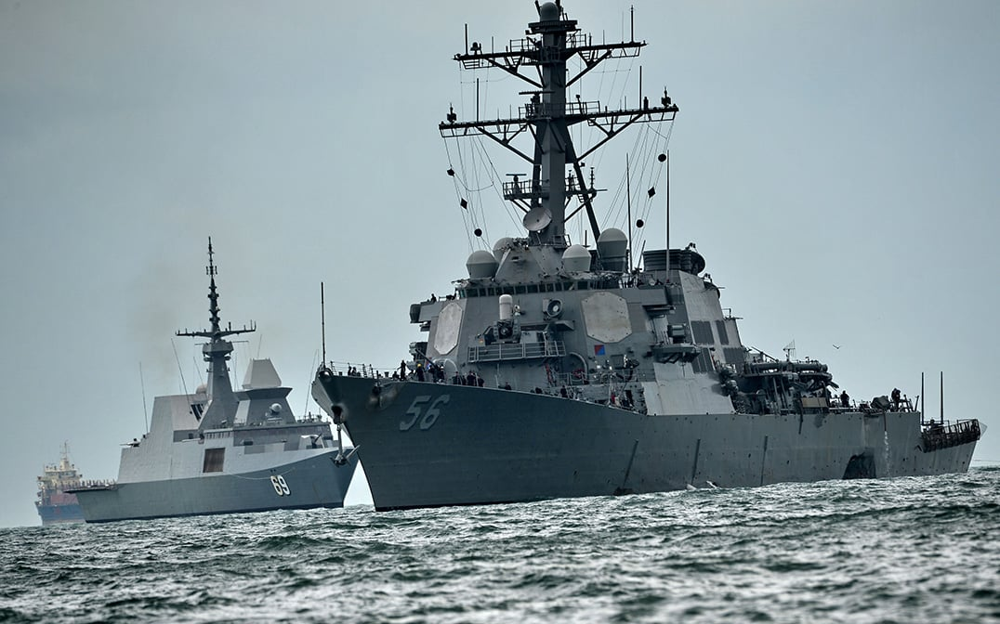

Naval Software Automation
As part of my internship at the Naval Surface Warfare Center Dahlgren Division, I contributed to the development of sophisticated computer programs aimed at automating critical software installation processes.
Project Highlights:
- Collaborative development with fellow trainees
- Significant experience working with software installation and automation
- Application of advanced technical competencies
- Utilization of both Linux and Windows platforms
Technologies Used:
- Bash Scripting
- PowerShell
- Python
- Version Control Systems
This project demonstrates my ability to work on complex, mission-critical systems and my proficiency in command-line operations and system administration across different operating systems.
Discuss This Project